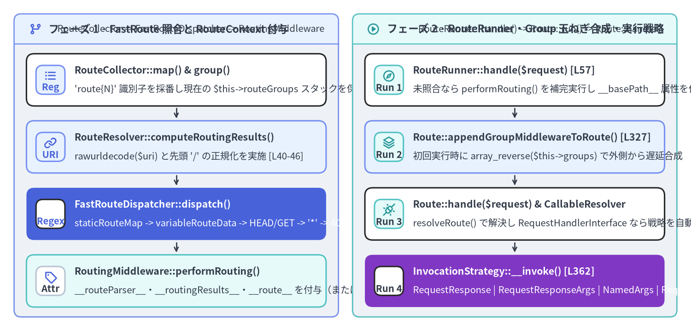
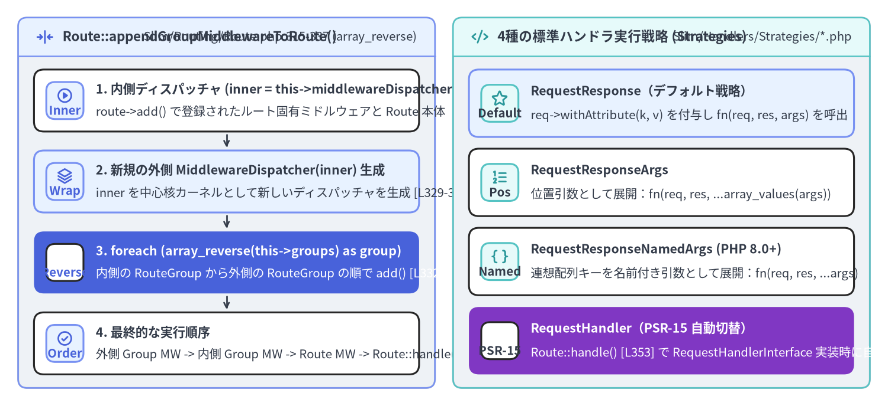

FastRoute コンパイル・RouteRunner・ハンドラ実行戦略の内部実装
Slim 4 のルーティングエンジンは、Slim\Routing\*（11 クラス）、Slim\Middleware\RoutingMiddleware（1 クラス）、および Slim\Handlers\Strategies\*（4 クラス）の計 15 ファイル（953 LOC）で構成されています。設計上の最大の特徴は、「URI の正規表現照合（RoutingMiddleware）」と「ルートハンドラの実行（RouteRunner）」を 2 つの独立した PSR-15 フェーズに分離している点にあります。これにより、中間ミドルウェアがマッチ済みの Route オブジェクトやパラメータを参照してから、最内殻の RouteRunner がグループミドルウェア・ルートミドルウェア・呼び出し戦略（InvocationStrategyInterface）を順次実行できます。

Source Code
from drawlib.canvas import save, setup
from drawlib.icons import phosphor
from drawlib.smartarts import CardList, Panel
from drawlib.styles import Colors, Styles
setup(width=196, height=94, dpi=150)
# Left Panel: Phase 1 — Route Registration & FastRoute Dispatch
p_left = Panel(
"フェーズ 1 · FastRoute 照合と RouteContext 付与",
"RouteCollector -> FastRouteDispatcher -> RoutingMiddleware",
style=Styles.Neutral.patch(shape_r=2.0),
header_style=Styles.PrimaryNeutral.patch(shape_line_width=1.2),
text_style=Styles.DarkBold.patch(text_size=10.8),
description_style=Styles.Dark.patch(text_size=9.8),
icon=phosphor.git_branch,
icon_style=Styles.PrimaryBold,
header_variant="filled",
header_height=8.5,
)
p_left.draw((4.0, 4.0), width=92.0, height=86.0)
lx, lw, lh = p_left.get_content_box((4.0, 4.0), width=92.0, height=86.0, padding=(3.5, 2.8))
match_steps = CardList(
style=Styles.White,
text_style=Styles.DarkBold.patch(text_size=10.2),
description_style=Styles.Dark.patch(text_size=9.8),
badge_shape="rounded_rect",
badge_style=Styles.PrimaryNeutral,
badge_text_style=Styles.PrimaryBold.patch(text_size=9.8),
icon_style=Styles.PrimaryBold,
direction="vertical",
spacing=2.5,
show_arrows=True,
arrow_style=Styles.DarkBold.patch(line_arrow_head_scale=10, line_width=1.3),
)
match_steps.add(
"RouteCollector::map() & group()",
"'route{N}' 識別子を採番し現在の $this->routeGroups スタックを保存",
badge_text="Reg",
icon=phosphor.list_bullets,
)
match_steps.add(
"RouteResolver::computeRoutingResults()",
"rawurldecode($uri) と先頭 '/' の正規化を実施 [L40-46]",
badge_text="URI",
icon=phosphor.link,
style=Styles.PrimaryNeutral,
)
match_steps.add(
"FastRouteDispatcher::dispatch()",
"staticRouteMap -> variableRouteData -> HEAD/GET -> '*' -> 405/404",
badge_text="Regex",
icon=phosphor.magnifying_glass,
style=Styles.PrimaryFlat,
text_style=Styles.WhiteBold.patch(text_size=10.2),
description_style=Styles.White.patch(text_size=9.8),
badge_style=Styles.White,
badge_text_style=Styles.PrimaryBold.patch(text_size=9.8),
icon_style=Styles.WhiteBold,
)
match_steps.add(
"RoutingMiddleware::performRouting()",
"__routeParser__・__routingResults__・__route__ を付与（または 404/405 例外）",
badge_text="Attr",
icon=phosphor.tag,
style=Styles.SecondaryNeutral,
badge_style=Styles.White.patch(shape_line_color=Colors.Gray4),
badge_text_style=Styles.DarkBold.patch(text_size=9.8),
)
match_steps.draw(xy=lx, width=lw, height=lh)
# Right Panel: Phase 2 — RouteRunner, Group Onion & Strategy Invocation
p_right = Panel(
"フェーズ 2 · RouteRunner・Group 玉ねぎ合成・実行戦略",
"RouteRunner::handle() -> Route::run() -> Route::handle()",
style=Styles.Neutral.patch(shape_r=2.0),
header_style=Styles.SecondaryNeutral.patch(shape_line_width=1.2),
text_style=Styles.DarkBold.patch(text_size=10.8),
description_style=Styles.Dark.patch(text_size=9.8),
icon=phosphor.play_circle,
icon_style=Styles.SecondaryBold,
header_variant="filled",
header_height=8.5,
)
p_right.draw((100.0, 4.0), width=92.0, height=86.0)
rx, rw, rh = p_right.get_content_box((100.0, 4.0), width=92.0, height=86.0, padding=(3.5, 2.8))
exec_steps = CardList(
style=Styles.White,
text_style=Styles.DarkBold.patch(text_size=10.2),
description_style=Styles.Dark.patch(text_size=9.8),
badge_shape="rounded_rect",
badge_style=Styles.SecondaryNeutral,
badge_text_style=Styles.DarkBold.patch(text_size=9.8),
icon_style=Styles.SecondaryBold,
direction="vertical",
spacing=2.5,
show_arrows=True,
arrow_style=Styles.DarkBold.patch(line_arrow_head_scale=10, line_width=1.3),
)
exec_steps.add(
"RouteRunner::handle($request) [L57]",
"未照合なら performRouting() を補完実行し __basePath__ 属性を付与",
badge_text="Run 1",
icon=phosphor.compass,
)
exec_steps.add(
"Route::appendGroupMiddlewareToRoute() [L327]",
"初回実行時に array_reverse($this->groups) で外側から遅延合成",
badge_text="Run 2",
icon=phosphor.stack,
style=Styles.PrimaryNeutral,
)
exec_steps.add(
"Route::handle($request) & CallableResolver",
"resolveRoute() で解決し RequestHandlerInterface なら戦略を自動切替",
badge_text="Run 3",
icon=phosphor.plugs_connected,
)
exec_steps.add(
"InvocationStrategy::__invoke() [L362]",
"RequestResponse | RequestResponseArgs | NamedArgs | RequestHandler",
badge_text="Run 4",
icon=phosphor.lightning,
style=Styles.AccentFlat,
text_style=Styles.WhiteBold.patch(text_size=10.2),
description_style=Styles.White.patch(text_size=9.8),
badge_style=Styles.White,
badge_text_style=Styles.DarkBold.patch(text_size=9.8),
icon_style=Styles.WhiteBold,
)
exec_steps.draw(xy=rx, width=rw, height=lh)
save()
1. ルート収集とプレフィックス・グループスタック（RouteCollectorProxy & RouteCollector）
ネストされた group() 呼び出しがプレフィックスとグループ階層を蓄積する仕組み
以下のようにネストされたルートグループを定義したとします。
$app->group('/v1', function (RouteCollectorProxy $group) {
$group->group('/users', function (RouteCollectorProxy $users) {
$users->get('/{id}', UserController::class . ':show');
})->add(UserScopeMiddleware::class);
})->add(ApiVersionMiddleware::class);
この登録処理では、RouteCollectorProxy（Slim/Routing/RouteCollectorProxy.php）、RouteCollector（Slim/Routing/RouteCollector.php）、RouteGroup（Slim/Routing/RouteGroup.php）の3クラスが同期的に連携します。
- グループプレフィックスの連結（
Slim/Routing/RouteCollectorProxy.php:165-180）: 各RouteCollectorProxyはprotected string $groupPattern（Slim\App本体では''）を保持しています。$proxy->group($pattern, $callable)や$proxy->map(...)が呼ばれると、$pattern = $this->groupPattern . $patternによって親プレフィックスを先頭に結合してから$this->routeCollectorに委譲します。 - グループスタックの Push / Pop（
Slim/Routing/RouteCollector.php:230-239）:RouteCollector::group()は連結済み$patternを持つ子RouteCollectorProxyとRouteGroupを生成し、$this->routeGroups[]スタックに Push した状態で$routeGroup->collectRoutes()を実行し、完了直後にarray_pop($this->routeGroups)で Pop します。// Slim/Routing/RouteCollector.php:230-239 public function group(string $pattern, $callable): RouteGroupInterface { $routeGroup = $this->createGroup($pattern, $callable); $this->routeGroups[] = $routeGroup; $routeGroup->collectRoutes(); array_pop($this->routeGroups); return $routeGroup; } - ルート識別子
'route{N}'の採番とグループ配列のスナップショット（Slim/Routing/RouteCollector.php:268-300）:collectRoutes()実行中に呼ばれた$users->get(...)はRouteCollector::map()に到達し、その時点でアクティブな$this->routeGroups配列のコピー（[RouteGroup('/v1'), RouteGroup('/v1/users')]）と連番カウンタ$this->routeCounterをnew Route(...)（Slim/Routing/Route.php:120-141）に渡します。生成されたRouteは'route' . $identifier（'route0'、'route1'等）を識別子として$this->routes['route0'] = $routeに格納されます。
2. Dispatcher と FastRouteDispatcher：Nikic FastRoute の拡張実装
FastRoute の遅延コンパイルとキャッシュファイル出力（Slim/Routing/Dispatcher.php:24-58）
Slim\Routing\Dispatcher は $app->get() の登録時には正規表現ツリーをコンパイルせず、最初の dispatch() または getAllowedMethods() 呼び出し時に Dispatcher::createDispatcher() で遅延生成します。
// Slim/Routing/Dispatcher.php:30-54
$routeDefinitionCallback = function (FastRouteCollector $r): void {
$basePath = $this->routeCollector->getBasePath();
foreach ($this->routeCollector->getRoutes() as $route) {
$r->addRoute($route->getMethods(), $basePath . $route->getPattern(), $route->getIdentifier());
}
};
$cacheFile = $this->routeCollector->getCacheFile();
if ($cacheFile) {
$dispatcher = \FastRoute\cachedDispatcher($routeDefinitionCallback, [
'dataGenerator' => GroupCountBased::class,
'dispatcher' => FastRouteDispatcher::class,
'routeParser' => new Std(),
'cacheFile' => $cacheFile,
]);
} else {
$dispatcher = \FastRoute\simpleDispatcher($routeDefinitionCallback, [
'dataGenerator' => GroupCountBased::class,
'dispatcher' => FastRouteDispatcher::class,
'routeParser' => new Std(),
]);
}
ここで FastRoute に登録されるハンドラ値（第3引数）が、クロージャやオブジェクトではなく 文字列識別子 $route->getIdentifier()（'route0' 等） である点に注目してください。文字列のみで構成されているため、\FastRoute\cachedDispatcher() はコンパイル済みの静的連想配列と正規表現チャンク配列を var_export()（<?php return ...;）でそのまま $cacheFile に書き出すことができ、本番環境の PHP-FPM ワーカーは OPcache から正規表現テーブルをゼロコストで読み込めます。
なぜ FastRouteDispatcher は GroupCountBased をオーバーライドするのか？（Slim/Routing/FastRouteDispatcher.php:15-116）
Slim\Routing\FastRouteDispatcher は FastRoute\Dispatcher\GroupCountBased を継承し、dispatch($httpMethod, $uri)（33〜59 行目）と getAllowedMethods(string $uri)（92〜115 行目）を独自実装で置き換えています。
// Slim/Routing/FastRouteDispatcher.php:33-59
public function dispatch($httpMethod, $uri): array
{
$routingResults = $this->routingResults($httpMethod, $uri);
if ($routingResults[0] === self::FOUND) {
return $routingResults;
}
// For HEAD requests, attempt fallback to GET
if ($httpMethod === 'HEAD') {
$routingResults = $this->routingResults('GET', $uri);
if ($routingResults[0] === self::FOUND) {
return $routingResults;
}
}
// If nothing else matches, try fallback routes
$routingResults = $this->routingResults('*', $uri);
if ($routingResults[0] === self::FOUND) {
return $routingResults;
}
if (!empty($this->getAllowedMethods($uri))) {
return [self::METHOD_NOT_ALLOWED, null, []];
}
return [self::NOT_FOUND, null, []];
}
- $O(1)$ 静的ハッシュ照合とチャンク正規表現照合（
routingResults()、67〜85 行目）: まずisset($this->staticRouteMap[$httpMethod][$uri])を $O(1)$ で検査し、静的ルートでなければ親クラスの$this->dispatchVariableRoute($this->variableRouteData[$httpMethod], $uri)（約10ルート単位でグループ化された合成正規表現照合）を呼び出します。 - RFC 2616 準拠の
HEAD -> GETフォールバック（41〜46 行目）:HEADリクエストに対応する明示的なHEADルートが存在しない場合、自動的にroutingResults('GET', $uri)へフォールバックします。その後、Slim\App::handle()の末尾（Slim/App.php:218-222）でレスポンスボディが空ストリームに差し替えられます。 - ワイルドカード
'*'メソッドフォールバック（49〜52 行目）:$app->map(['*'], ...)で登録された全メソッド共通ルートへのフォールバックを処理します。 getAllowedMethods(string $uri)の単一 URI メモ化キャッシュ（92〜115 行目）: 54 行目でMETHOD_NOT_ALLOWED（405）と判定された直後、RoutingMiddleware::performRouting()（Slim/Middleware/RoutingMiddleware.php:80）が$routingResults->getAllowedMethods()を再度呼び出します。同じ URI に対して全メソッドの正規表現テーブルを2回走査する無駄を防ぐため、FastRouteDispatcherはprivate ?string $allowedMethodsUriとprivate array $allowedMethods（20〜25 行目、94〜96 行目）に直前の URI の許可メソッド配列をメモ化しています。
3. RoutingMiddleware・RouteContext と Route::run() のグループ玉ねぎ合成

Source Code
from drawlib.canvas import save, setup
from drawlib.icons import phosphor
from drawlib.smartarts import CardList, Panel
from drawlib.styles import Colors, Styles
setup(width=196, height=90, dpi=150)
# Left Panel: Route::appendGroupMiddlewareToRoute()
p_left = Panel(
"Route::appendGroupMiddlewareToRoute()",
"Slim/Routing/Route.php:315-337 (array_reverse)",
style=Styles.Neutral.patch(shape_r=2.0),
header_style=Styles.PrimaryNeutral.patch(shape_line_width=1.2),
text_style=Styles.DarkBold.patch(text_size=10.8),
description_style=Styles.Dark.patch(text_size=9.8),
icon=phosphor.arrows_in_line_horizontal,
icon_style=Styles.PrimaryBold,
header_variant="filled",
header_height=8.5,
)
p_left.draw((4.0, 4.0), width=92.0, height=82.0)
lx, lw, lh = p_left.get_content_box((4.0, 4.0), width=92.0, height=82.0, padding=(3.5, 3.0))
grp_steps = CardList(
style=Styles.White,
text_style=Styles.DarkBold.patch(text_size=10.2),
description_style=Styles.Dark.patch(text_size=9.8),
badge_shape="rounded_rect",
badge_style=Styles.PrimaryNeutral,
badge_text_style=Styles.PrimaryBold.patch(text_size=9.8),
icon_style=Styles.PrimaryBold,
direction="vertical",
spacing=2.6,
show_arrows=True,
arrow_style=Styles.DarkBold.patch(line_arrow_head_scale=10, line_width=1.3),
)
grp_steps.add(
"1. 内側ディスパッチャ (inner = this->middlewareDispatcher)",
"route->add() で登録されたルート固有ミドルウェアと Route 本体",
badge_text="Inner",
icon=phosphor.play_circle,
)
grp_steps.add(
"2. 新規の外側 MiddlewareDispatcher(inner) 生成",
"inner を中心核カーネルとして新しいディスパッチャを生成 [L329-330]",
badge_text="Wrap",
icon=phosphor.stack,
style=Styles.PrimaryNeutral,
)
grp_steps.add(
"3. foreach (array_reverse(this->groups) as group)",
"内側の RouteGroup から外側の RouteGroup の順で add() [L332-334]",
badge_text="Reverse",
icon=phosphor.arrows_down_up,
style=Styles.PrimaryFlat,
text_style=Styles.WhiteBold.patch(text_size=10.2),
description_style=Styles.White.patch(text_size=9.8),
badge_style=Styles.White,
badge_text_style=Styles.PrimaryBold.patch(text_size=9.8),
icon_style=Styles.WhiteBold,
)
grp_steps.add(
"4. 最終的な実行順序",
"外側 Group MW -> 内側 Group MW -> Route MW -> Route::handle()",
badge_text="Order",
icon=phosphor.check_circle,
)
grp_steps.draw(xy=lx, width=lw, height=lh)
# Right Panel: 4 Handler Invocation Strategies
p_right = Panel(
"4種の標準ハンドラ実行戦略 (Strategies)",
"Slim/Handlers/Strategies/*.php",
style=Styles.Neutral.patch(shape_r=2.0),
header_style=Styles.SecondaryNeutral.patch(shape_line_width=1.2),
text_style=Styles.DarkBold.patch(text_size=10.8),
description_style=Styles.Dark.patch(text_size=9.8),
icon=phosphor.code,
icon_style=Styles.SecondaryBold,
header_variant="filled",
header_height=8.5,
)
p_right.draw((100.0, 4.0), width=92.0, height=82.0)
rx, rw, rh = p_right.get_content_box((100.0, 4.0), width=92.0, height=82.0, padding=(3.5, 3.0))
strat_list = CardList(
style=Styles.White,
text_style=Styles.DarkBold.patch(text_size=10.2),
description_style=Styles.Dark.patch(text_size=9.8),
badge_shape="rounded_rect",
badge_style=Styles.SecondaryNeutral,
badge_text_style=Styles.DarkBold.patch(text_size=9.8),
icon_style=Styles.SecondaryBold,
direction="vertical",
spacing=2.6,
)
strat_list.add(
"RequestResponse（デフォルト戦略）",
"req->withAttribute(k, v) を付与し fn(req, res, args) を呼出",
badge_text="Default",
icon=phosphor.star,
style=Styles.PrimaryNeutral,
)
strat_list.add(
"RequestResponseArgs",
"位置引数として展開：fn(req, res, ...array_values(args))",
badge_text="Pos",
icon=phosphor.list_numbers,
)
strat_list.add(
"RequestResponseNamedArgs (PHP 8.0+)",
"連想配列キーを名前付き引数として展開：fn(req, res, ...args)",
badge_text="Named",
icon=phosphor.brackets_curly,
)
strat_list.add(
"RequestHandler（PSR-15 自動切替）",
"Route::handle() [L353] で RequestHandlerInterface 実装時に自動選択",
badge_text="PSR-15",
icon=phosphor.lightning,
style=Styles.AccentFlat,
text_style=Styles.WhiteBold.patch(text_size=10.2),
description_style=Styles.White.patch(text_size=9.8),
badge_style=Styles.White,
badge_text_style=Styles.DarkBold.patch(text_size=9.8),
icon_style=Styles.WhiteBold,
)
strat_list.draw(xy=rx, width=rw, height=lh)
save()
なぜ Route::appendGroupMiddlewareToRoute() は $this->groups を逆順ループするのか？（Slim/Routing/Route.php:327-337）
ネストされたグループ内でルートが定義される際（OuterGroup -> InnerGroup -> Route）、ルート固有のミドルウェア（$route->add(...)）はグループコールバックの内部で登録されるのに対し、外側のグループミドルウェア（$outerGroup->add(...)）は collectRoutes() が終了した後にメソッドチェーンで登録されます。
そのため、Route はコンストラクタ時点ではグループのミドルウェアを取り込むことができません。代わりに、最初のリクエストで Route::run()（Slim/Routing/Route.php:315-322）が呼ばれた瞬間に一度だけ appendGroupMiddlewareToRoute() を実行し、既存の $this->middlewareDispatcher（$inner）を核とする新しい MiddlewareDispatcher($inner) を作り、array_reverse($this->groups) の順でグループミドルウェアを追加します。
// Slim/Routing/Route.php:327-337
protected function appendGroupMiddlewareToRoute(): void
{
$inner = $this->middlewareDispatcher;
$this->middlewareDispatcher = new MiddlewareDispatcher($inner, $this->callableResolver, $this->container);
foreach (array_reverse($this->groups) as $group) {
$group->appendMiddlewareToDispatcher($this->middlewareDispatcher);
}
$this->groupMiddlewareAppended = true;
}
MiddlewareDispatcher::add() は後入れ先出し（LIFO）であるため、array_reverse($this->groups) によって内側の InnerGroup を先に add() し、外側の OuterGroup を後から add() することで、実行時には「OuterGroup -> InnerGroup -> Route 固有ミドルウェア -> Route::handle()」という直感通りの外から内への実行順序が成立します。
PSR-15 RequestHandler 戦略への自動切り替え（Slim/Routing/Route.php:342-363）
Route::run() の最内殻にある Route::handle(ServerRequestInterface $request) は、CallableResolver::resolveRoute() で解決された $callable が [RequestHandlerInterface, 'handle'] の形式であるかどうかを検査します。
// Slim/Routing/Route.php:342-363
public function handle(ServerRequestInterface $request): ResponseInterface
{
if ($this->callableResolver instanceof AdvancedCallableResolverInterface) {
$callable = $this->callableResolver->resolveRoute($this->callable);
} else {
$callable = $this->callableResolver->resolve($this->callable);
}
$strategy = $this->invocationStrategy;
$strategyImplements = class_implements($strategy);
if (
is_array($callable)
&& $callable[0] instanceof RequestHandlerInterface
&& !in_array(RequestHandlerInvocationStrategyInterface::class, $strategyImplements)
) {
$strategy = new RequestHandler();
}
$response = $this->responseFactory->createResponse();
return $strategy($callable, $request, $response, $this->arguments);
}
アプリケーションのデフォルト戦略が RequestResponse のままであっても、ルートハンドラが PSR-15 RequestHandlerInterface を実装していれば 353〜359 行目で自動的に new RequestHandler() 戦略へ切り替わり、不要な空 Response 引数を渡さずに $callable($request) を直接呼び出します。
続いて 第5章: ErrorMiddleware・ErrorHandler・レンダラ群 に進み、ルーティングやハンドラ実行中に発生した例外がどのように捕捉・コンテンツ交渉・描画されるかを詳しく見ていきましょう。